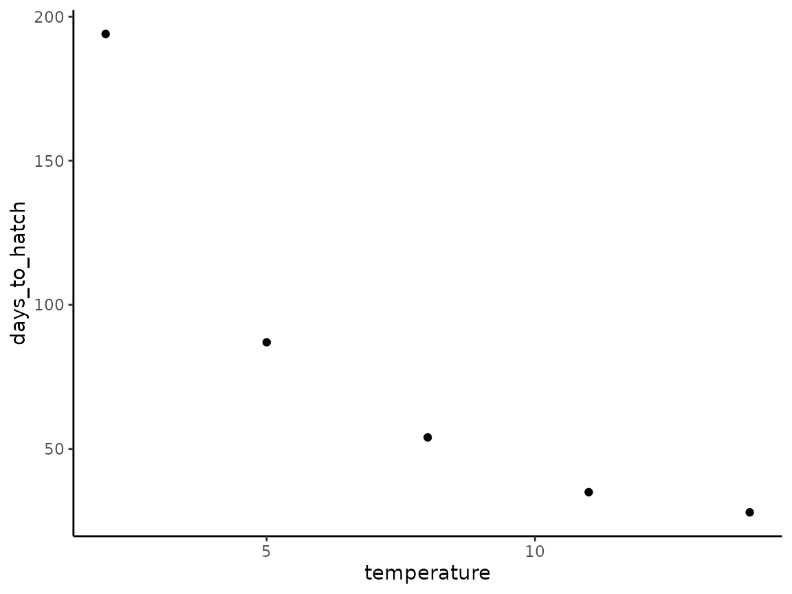
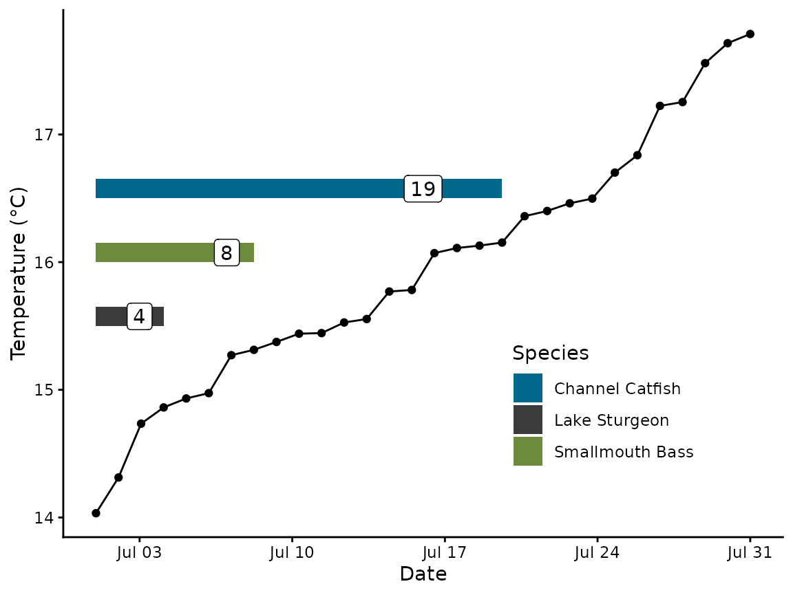

Parameterize hatchR Models
Morgan Sparks, Bryan M. Maitland
Source:vignettes/Parameterize_models.Rmd
Parameterize_models.RmdOverview
This vignette describes two options for selecting parameterized models for predicting fish early life history phenology using hatchR:
- model parameterizations included in the package
- custom parameterizations using your own data (i.e., days to hatch or emerge and average incubation temperature)
Built-in parameterizations
Published model parameterizations are contained in the
model_table object. This includes parameterizations for
several salmonid species from hatchery studies relating temperature to
hatch and emergence timing Sparks et al.
(2019), and can be selected using
hatchR::model_select().
These models are parameterized to 50% hatch or emergence (see Velsen (1987) for details). It is important to remember that while these models predict a point estimate, hatch and emergence, even within a single spawning family would occur as a distribution of the phenological event.
model_table
model_table is loaded with hatchR, and
is a tibble with 51 rows and 5 columns:
model_table
#> # A tibble: 51 × 5
#> author species model_id development_type expression
#> <chr> <chr> <chr> <chr> <chr>
#> 1 Beacham and Murray 1990 sockeye 2 hatch 1 /exp(6.727 - log(…
#> 2 Beacham and Murray 1990 sockeye 4 hatch 1/exp(8.734 + (-1.5…
#> 3 Beacham and Murray 1990 sockeye 5 hatch 1/exp(9.848 + (-1.5…
#> 4 Beacham and Murray 1990 sockeye 7 hatch 1/exp(5.379 + (-0.0…
#> 5 Beacham and Murray 1990 sockeye 2 emerge 1 / exp(7.227 - log…
#> # ℹ 46 more rows-
author: author-date key denoting publication containing the model parameterization -
species: the species the model is parameterized for -
model: the model ID (if multiple model parameterizations were built (e.g., Beacham and Murray (1990)) -
development_type: the phenological development type (i.e., hatch or emerge) -
expression: a character string defining the model parameterization
model_select()
Combinations of author, species,
model, and development_type are unique and
used to select parameterized model expressions. For instance, if you
wanted to access the expression for sockeye salmon (Oncorhynchus
nerka) hatch phenology using model #2 from Beacham and Murray (1990), you would run:
sockeye_hatch_mod <- model_select(
author = "Beacham and Murray 1990",
species = "sockeye",
model = 2,
development_type = "hatch"
)
sockeye_hatch_mod
#> # A tibble: 1 × 5
#> author species model_id development_type expression
#> <chr> <chr> <chr> <chr> <chr>
#> 1 Beacham and Murray 1990 sockeye 2 hatch 1 /exp(6.727 - log(…Note, that the above arguments are equivalent to the first line and
four columns from model_table. Your model function
object—in this case sockeye_hatch_mod—can then be passed to
predict_phenology(), which we will demonstrate in the Predict
Phenology: Basic vignette.
To see all available characterizations use:
View(model_table)Creating custom models
hatchR also includes basic functionality to generate your own model parameterizations for predicting hatching and emergence phenology using your own data. Importantly, this functionality implements model form #2 of Beacham and Murray (1990), which we chose because of its overall simplicity and negligible loss of accuracy. See Beacham and Murray (1990) and Sparks et al. (2019) for more specific discussion regarding model #2 and the development of the effective value approach.
The model follows the general format of:
Where i is the daily value and a fish hatches or emerges when the cumulative sum reaches one:
fit_model()
The function fit_model() uses data in which average
incubation temperature (°C) and days to phenological event are the
inputs and estimates parameter coefficients for
logea and b using
stats::nls().
Here, we borrow data from Table 8.1 (pg. 183) from Quinn (2018) to generate a custom hatch parameterization for brown trout (Salmo trutta).
You could either create a .csv file with those data and import them
with readr::read_csv() or alternatively, directly input
them as an object in R. We’ll use tibble::tibble() to
create the data.
bt_data <- tibble(
temperature = c(2,5,8,11,14),
days_to_hatch = c(194,87,54,35,28)
)
bt_data
#> # A tibble: 5 × 2
#> temperature days_to_hatch
#> <dbl> <dbl>
#> 1 2 194
#> 2 5 87
#> 3 8 54
#> 4 11 35
#> 5 14 28We can plot our data for a validity check using ggplot2:
bt_data |>
ggplot(aes(x = temperature, y = days_to_hatch)) +
geom_point() +
theme_classic()
We can now use fit_model() to create our custom
parameterization from our data. You must specify a species and a
development type, information which is carried forward in subsequent
functions in hatchR.
bt_fit <- fit_model(temp = bt_data$temperature,
days = bt_data$days_to_hatch,
species = "brown_trout",
development_type = "hatch")The output of fit_model() is a list with several
elements:
-
bt_fit$model: a model object of class “nls” containing the nonlinear regression model -
bt_fit$log_a: a named numeric vector of the estimated coefficient logea -
bt_fit$b: a named numeric vector of the estimated coefficient b -
bt_fit$r_squared: pseudo R-squared value (1 - (residual sum of squares / total sum of squares)) -
bt_fit$mse: mean squared error (mean(residuals^2)) -
bt_fit$rmse: root mean squared error (sqrt(mse) -
bt_fit$expression: a tibble with the species, development type, and the parameterized model expression -
bt_fit$pred_plot: a ggplot object showing the observed data and predicted values
bt_fit
#> $model
#> Nonlinear regression model
#> model: y ~ a/(x - b)
#> data: df
#> a b
#> 439.1634 -0.2582
#> residual sum-of-squares: 36.92
#>
#> Number of iterations to convergence: 5
#> Achieved convergence tolerance: 2.062e-07
#>
#> $log_a
#> [1] 6.084872
#>
#> $b
#> [1] -0.2582361
#>
#> $r_squared
#> [1] 0.9979987
#>
#> $mse
#> [1] 7.38454
#>
#> $rmse
#> [1] 2.717451
#>
#> $expression
#> # A tibble: 1 × 3
#> species development_type expression
#> <chr> <chr> <chr>
#> 1 brown_trout hatch 1 / exp(6.08487164651134 - log(x + 0.25823605907…
#>
#> $pred_plot
The vast majority of the time, what you will want is the actual
expression with parameter estimates for use in the
model = ... argument of predict_phenology().
This is stored in the expression element of the list.
You can either pass this tibble directly with the $
operator by calling $expression element of the list (e.g.,
model = bt_fit$expression) or set as an object to pass,
like so:
bt_hatch_exp <- bt_fit$expression
bt_hatch_exp
#> # A tibble: 1 × 3
#> species development_type expression
#> <chr> <chr> <chr>
#> 1 brown_trout hatch 1 / exp(6.08487164651134 - log(x + 0.25823605907…predict_phenology() will extract the expression from the
object and use it to predict phenology. We will demonstrate this in the
Predict
phenology: Basic vignette.
Fitting models for other fishes
We demonstrate how the fit_model() function may be used
to create custom parameterizations for species beyond the Salmonids in
the model_table included in the package. We include
parameterizations from three warm-water species to demonstrate the
fit_model() utility for fishes beyond the scope of the
original effective value approach. These parameterizations are for
commonly cultured sportfishes including Smallmouth Bass (Micropterus
dolomieu) (Webster 1948), Channel
Catfish (Ictalurus punctatus) (Small and
Bates 2001) , and Lake Sturgeon (Acipenser fulvescens)
(Smith and King 2005).
We demonstrate the utility of this approach by creating a random thermal regime with an ascending thermograph with a mean temperature of 16 °C, parameterizing models for each species, and demonstrating days to hatch and developmental period for each species with the random thermal regime .
### make temp regime
set.seed(123)
# create random temps and corresponding dates
temps_sim <- sort(rnorm(n =30, mean = 16, sd = 1), decreasing = FALSE)
dates_sim <- seq(from = ymd("2000-07-01"),
to = ymd("2000-07-31"), length.out = 30)
data_sim <- matrix(NA, 30, 2) |> data.frame()
data_sim[,1] <- temps_sim
data_sim[,2] <- dates_sim
# change names so they aren't the same as the vector objects
colnames(data_sim) <- c("temp_sim", "date_sim")Next we’ll parameterize our models for the three different fishes
### smallmouth mod
smallmouth <- matrix(NA, 10, 2) |> data.frame()
colnames(smallmouth) <- c("hours", "temp_F")
smallmouth$hours <- c(52, 54, 70, 78, 90, 98, 150, 167, 238, 234)
smallmouth$temp_F <- c(77, 75, 71, 70, 67, 65, 60, 59, 55, 55)
# change °F to °C and hours to days
smallmouth <- smallmouth |>
mutate(days = ceiling(hours/24),
temp_C = (temp_F -32) * (5/9))
# model object for smallmouth bass
smb_mod <- fit_model(temp = smallmouth$temp_C,
days = smallmouth$days,
species = "smb",
development_type = "hatch")
### catfish mod
catfish <- matrix(NA, 3, 2) |> data.frame()
colnames(catfish) <- c("days", "temp_C")
catfish$days <- c(16,21,26)
catfish$temp_C <- c(22,10,7)
cat_mod <- fit_model(temp = catfish$temp_C,
days = catfish$days,
species = "catfish",
development_type = "hatch")
### lake sturgeon mod
sturgeon <- matrix(NA, 7, 2) |> data.frame()
colnames(sturgeon) <- c("days", "CTU")
sturgeon$days <- c(7,5,6,6,5,11,7)
sturgeon$CTU <- c(58.1, 62.2, 61.1, 57.5, 58.1, 71.4, 54.7)
sturgeon <- sturgeon |>
mutate(temp_C = CTU/days) # change CTUs to average temp and add column
sturgeon_mod <- fit_model(days = sturgeon$days,
temp = sturgeon$temp_C,
species = "sturgeon",
development_type = "hatch")Note the R2 fit from the models below. You can see they generally all preform well and are in line with values from model 2 of Beacham and Murray (1990).
#model fits
smb_mod$r_squared; cat_mod$r_squared; sturgeon_mod$r_squared
#> [1] 0.9868067
#> [1] 0.9433598
#> [1] 0.9217358After we have our fits for each species we can predict phenology
using our data_sim datset we created above.
### predict_phenology
#smallmouth bass
smb_res <- predict_phenology(data = data_sim,
dates = date_sim,
temperature = temp_sim,
spawn.date = "2000-07-01",
model = smb_mod$expression)
# catfish
catfish_res <- predict_phenology(data = data_sim,
dates = date_sim,
temperature = temp_sim,
spawn.date = "2000-07-01",
model = cat_mod$expression)
# sturgeon
# note that 16 C is pretty far out of range of temps for model fit, not best practice
sturgeon_res <- predict_phenology(data = data_sim,
dates = date_sim,
temperature = temp_sim,
spawn.date = "2000-07-01",
model = sturgeon_mod$expression)After we have our predictions we’ll combine our results and do a little data cleaning.
# summary for all species
all_res <- data.frame(matrix(NA, 3, 2))
colnames(all_res) <- c("start", "stop")
all_res$start <- c(catfish_res$dev_period$start,
smb_res$dev_period$start,
sturgeon_res$dev_period$start)
all_res$stop <- c(catfish_res$dev_period$stop,
smb_res$dev_period$stop,
sturgeon_res$dev_period$stop)
all_res <- all_res |>
mutate(days = ceiling(stop-start),
index = c(17,16.5,16)) # index for our horizontal bars
all_res$Species <- c("Channel Catfish", "Smallmouth Bass", "Lake Sturgeon")And then finally we can plot our results.
ggplot() +
geom_point(data = data_sim, aes(x = date_sim, y = temp_sim )) +
geom_line(data = data_sim, aes(x = date_sim, y = temp_sim )) +
geom_rect(data = all_res, aes(xmin = start, xmax = stop, ymax =index-.35, ymin = index-.5, fill = Species)) +
geom_label(data = all_res, aes(x = start + (stop - start) / 1.25, y = (index -0.425), label = days)) +
labs(x = "Date", y = "Temperature (°C)") +
scale_fill_manual(values = c("deepskyblue4", "grey23", "darkolivegreen4")) +
theme_classic() +
theme(legend.position = c(0.75, 0.25))
Important considerations
Here are some important considerations:
Your model fits will only be as good as the data they are generated from.
We recommend a minimum of four temperature x hatch/emerge data points.
-
Data should be spread across temperatures as much as possible.
- It’s much better to have a fit derived from data for temperatures such as 3, 7, 10, 14 °C than it is 8, 9, 10, 11 °C.
- The behavior of the model function around the tails of very cold or warm temperatures (relative to the fish species) drive the fit of the function, so more extreme temperatures are helpful.
Think hard about whether the data you are generating your parameterization from match the data from which you are trying to predict or if you are extrapolating beyond what is sensible for the model.
Understand your response variable, most models are fit to 50% hatch or emergence for a family group or population. However, your data may be different and you should interpret your results accordingly (e.g. comparisons between 50% hatch from population A to 95% hatch of population B may not be reasonable).